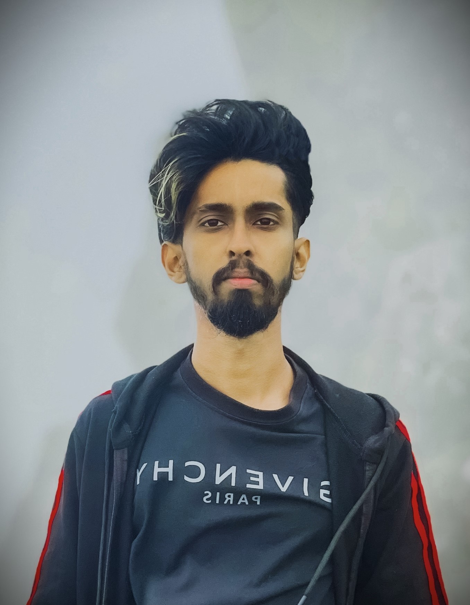

I'm Udayanga Vishvajith Perera | video editor & mobile videographer specializing in long-form storytelling, scroll stopping short-form cuts, and shoot-to-edit mobile videography.
Long-form documentaries, short-form hooks, and raw mobile footage turned into cut-together stories.
Every edit runs through the same pipeline: pacing, grade, sound, and captions tuned per platform.
Structure and rhythm built to hold attention from the first frame to the last second.
Kinetic titles, transitions, and overlays that support the story instead of distracting from it.
Mood-driven grades built in DaVinci Resolve, matched consistently across every shot.
Clean dialogue, balanced music beds, and sound design that carries the emotion of a scene.
Punchy, on-beat captioning in Sinhala or English, styled to match your brand.
Filming and editing handled end-to-end from a single phone-first workflow.
Deadlines are commitments, not estimates — delivered on time, every time.
Every cut is made with watch-time and click-through in mind.
Sinhala and English captioning with context that actually lands.
Exports tuned for crisp playback on every platform, at any resolution.
A client-centric workflow — we refine until it's right.

I'm Udayanga Vishvajith Perera | a 25-year-old video editor and mobile videographer based in Kalutara, Sri Lanka. What started as trimming clips on a phone turned into a full craft: pacing, color, sound, and captions, all working together to keep a viewer watching. I care about the story first — the software is just how I tell it.
Tell me about your project — platform, timeline, and goals — and I'll get back to you within 24 hours.
Skip the form — reach out directly on WhatsApp or email and I'll get back to you within 24 hours.